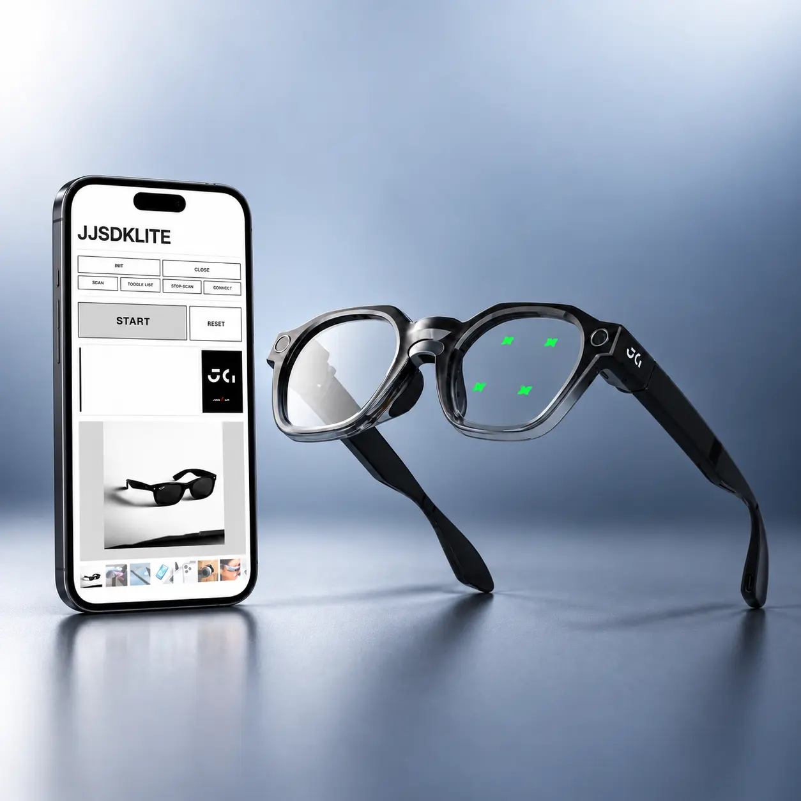

J9 Smart Glasses App & UI
From B2B demo prototype to real product — designing a cross-device experience integrating eye-tracking interaction, companion App, and on-glasses UI, helping partners clearly understand the glasses' capabilities and customizable directions.
App · Glasses UI · Design System

Design Context
HJ1 was a B2B eye-tracking demo prototype. J9 is the next-generation product — with an upgraded processing chip and shared hardware components (front-frame camera, eye-tracking module, AI-capable chip, speaker, microphone). The key difference: J9 pairs with a full Android phone system, enabling far more flexible feature planning and interaction design leveraging phone hardware.
J9 has a clearer commercial goal: a B2B product offering customizable solutions to consumer-facing brands — letting partners freely combine features, adapt interaction modes per scenario, and build their own branded smart glasses applications.
Challenges
- Integrating multiple input modalities: Eye-dwell selection and eye-triggered photos differ from touchpad or phone controls — the design needed to be both easy to learn and capable of clearly demonstrating each feature.
- Cross-device visual consistency: Phone and glasses screens differ dramatically in size and input method. Maintaining the same visual language and design system across both was the core visual challenge.
- Interaction architecture division: Phone handles feature selection; glasses handle detailed interaction — the two ends needed to complement each other while minimizing overall complexity.
- Building mental models for a new product category: Most partners have limited exposure to smart glasses — demo scenarios had to be concrete enough to make the features tangible.
What I Did
- Designed App pairing flow and feature menu, giving partners a clear picture of the glasses' full capabilities
- Planned glasses-side UI for four core functions: photo gallery, camera, AI translation, ECD (electrochromic lens control)
- Defined interaction specs as the design handoff basis for firmware and engineering teams
- Built a Design System to maintain visual consistency between App and glasses UI
- Built prototypes, conducted User Testing at exhibitions, and continuously refined based on feedback
- Co-authored user documentation with engineers
Design Process
Core interaction design question: How do we help users quickly grasp eye-tracking operation and switch fluidly between the App and the glasses?
Pairing flow modeled on Bluetooth; feature menu designed for eye-dwell selection
Pairing flow: Modeled on familiar Bluetooth connection UI — users step through a linear click sequence until pairing is confirmed, minimizing the learning curve.
Feature menu — key design decision: vertical list vs. 2×2 grid
The four glasses-side features are arranged in a single vertical column — not the intuitive 2×2 grid.
This decision follows J9's input logic: eye-dwell selection is primary, touchpad is secondary. A vertical layout makes eye-dwell precision easier to demonstrate — each option has enough vertical space for comfortable gaze targeting. A 2×2 grid would complicate horizontal touchpad navigation and make eye tracking's advantage less visible.
Reduce learning cost with familiar patterns; use design to resolve hardware constraints
Camera function: Users are already deeply familiar with phone camera interaction — so the glasses camera UI follows the same logic: a circular shutter button at the bottom of the display, triggered by eye-dwell.
However, there is a parallax gap between the front-frame camera and the user's eyes — what the viewfinder shows doesn't match what actually gets captured. To address this, I designed a 3-2-1 countdown mechanism: after triggering, a countdown appears, letting the user confirm the intended frame before the photo is taken — converting a hardware constraint into an intuitive confirmation step.
Other functions: Photo gallery, AI translation, ECD (electrochromic lens shade control) — all four functions accessible via the vertical menu. The glasses handle detailed interactions; the phone handles function-level selection and management.
One shared visual language across devices; each adapted to its hardware constraints
Built a unified Design System spanning both the App and glasses UI — ensuring consistent visual language, color, and typography hierarchy across both ends, rather than designing two separate systems. Each device then adapts for its screen size and input method, so users never feel a disconnect when switching between devices.
Results
Internal usability testing combined with exhibition User Testing, across 4 design iterations, continuously refining interaction details.
Conducted lightweight usability testing across the four core functions as a quantitative baseline for design validity.
Real-world usage feedback collected through exhibition User Testing. Each iteration focused on improving interaction precision and flattening the learning curve. The project is still in active development, with design and engineering advancing in parallel.
Reflection
The biggest shift from HJ1: moving from "demonstrate one thing" to "integrate multiple functions."
HJ1 had a single design goal: make a visitor feel eye tracking's core value in 1.5 minutes. Success meant no flow interruptions. J9 is a real product — users need to learn it, remember how to use it, and operate it flexibly across different contexts. That makes the design complexity completely different: not just thinking about each feature's interaction logic, but also the relationships between features, the division of labor between App and glasses, and the overall learning curve for new users.
The cross-device design system challenge also exceeded expectations. The gap between phone and glasses — screen size, input method, visual rendering space — is enormous. Maintaining consistent visual language and interaction logic across both ends is far harder than designing for a single device.
This project taught me that for emerging hardware products, continuous iteration is the core design work — not producing a perfect first version, but finding the next most important thing to improve in every round of exhibitions and testing.
Key Takeaways
- Integrating multiple functions is far harder than showcasing one — the relationships and division of labor between features is the most central UX architecture challenge
- Cross-device design system means finding a shared design language, not building two separate UIs — then adapting each to its own hardware constraints
- For eye-tracking interaction, the key to flattening the learning curve is anchoring new behaviors as close as possible to users' existing instincts — the circular shutter button is a perfect example
- For emerging hardware products, continuous iteration matters more than chasing a perfect first version